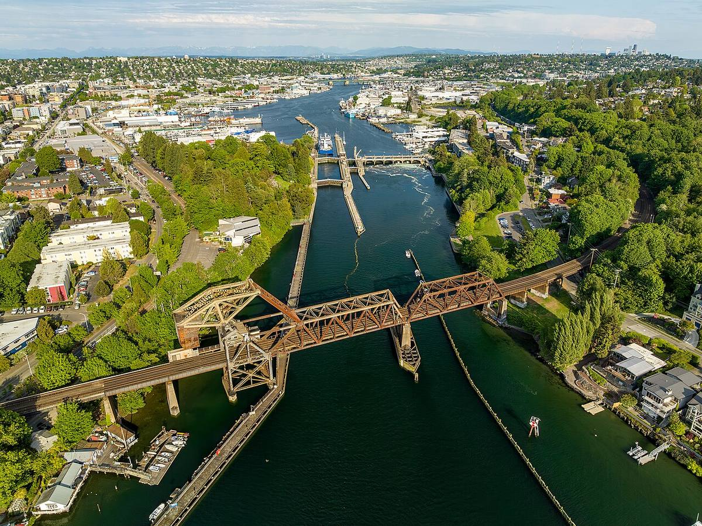

Living in Ballard

Ballard is a neighborhood in northwestern Seattle, Washington, United States. Formerly an independent city, the City of Seattle's official boundaries define it as bounded to the north by Crown Hill, to the east by Greenwood, Phinney Ridge and Fremont, to the south by the Lake Washington Ship Canal, and to the west by Puget Sound's Shilshole Bay. Like many neighborhoods in Seattle, its boundaries are loosely defined; these are the ones recognized by the city's municipal departments. (From Wikipedia, CC BY-SA 4.0)
Ballard is a neighborhood in Seattle with about 13,514 residents. The typical home value is about $754K (-2.6% over the past year), and 186 homes sold in the last 12 months. It is very walkable, with higher crime than most neighborhoods in the area.
Home prices and the market
| Typical home value | $754K · -2.6% over 12 months |
|---|---|
| Homes sold, last 12 months | 186 · median sale price $780K · 61 were condos |
| Homes for sale (estimate) | 63 · homes typically go under contract in 30 days |
| Median household income | $133K · 103rd highest income of 155 |
Schools
| Elementary | Adams Elementary School, 0.4 mi · 76% meet standard Area average 72% · 53rd best elementary schools of 155 |
|---|---|
| Middle school | Salmon Bay K-8 School, 0.6 mi · 74% meet standard Area average 74% · 45th best middle schools of 155 |
| High school | Ballard High School, 0.8 mi · 82% meet standard Area average 81% · 7th best high schools of 155 |
| Nearest college | Seattle Pacific University, 1.7 mi |
Share of students meeting the Washington state standard in English and math (2024-25). The nearest school is not always the assigned school; check with the school district.
Safety
About 74 crimes per 1,000 residents a year (violent crimes counted three times), higher crime than most neighborhoods in the area: 127th lowest crime of 155. Based on mapped police incidents in this neighborhood, scaled to the city's FBI-reported rate. Busy commercial areas can look high because visitors are not counted as residents.
Getting around
| Walkability | 17.3 of 20 (very walkable) · 16th most walkable of 155 |
|---|---|
| Light rail or train | Roosevelt, 3.4 mi · 120th closest to rail of 155 |
| Nearest bus stop | NW Market St & Ballard Ave NW, 0.06 mi |
| How residents commute | 12% take transit · 41% work from home |
Everyday amenities
| Grocery store | QFC, 0.2 mi · 7 within a mile |
|---|---|
| Pharmacy | Walgreens, 0.5 mi |
| Restaurants | 79 within a mile · 23rd most restaurants nearby of 155 |
| Shopping | Wallingford Center, 2.5 mi |
| Hospital | Swedish Hospital - Ballard Campus, 0.4 mi · 4 clinics within 2 miles |
| Library | Ballard Library, 0.2 mi |
Parks and recreation
| Nearest park | Ballard Commons Park, 0.1 mi · 74 acres of parks within a mile |
|---|---|
| Large green space | Discovery Park, 1.0 mi |
| Walking trail | Burke-Gilman Trail - Seattle, 0.0 mi |
| Gyms, spas and studios | 44 within a mile |
| Golf | Interbay Golf, 1.5 mi |
Thinking about Ballard?
Rachel Yo, Realogics Sotheby's International Realty, can walk you through homes for sale, recent sales and what to know before you buy here.
Your details go only to Rachel Yo at Realogics Sotheby's International Realty to answer your request. They are not sold or shared, and your mobile number and texting permission are never shared with anyone for marketing.
Nearby neighborhoods
- Loyal HeightsSeattle · $956K
- Sunset HillSeattle · $962K
- West WoodlandSeattle · $867K
- Whittier HeightsSeattle · $875K
- Lawton ParkSeattle · $1.02M
- Phinney RidgeSeattle · $986K
Data as of: home values Zillow 2026-09; recorded sales Nov 2025 – Oct 2026; schools OSPI 2024-25; Census ACS 2020-2024. Distances are straight-line from the center of the neighborhood.